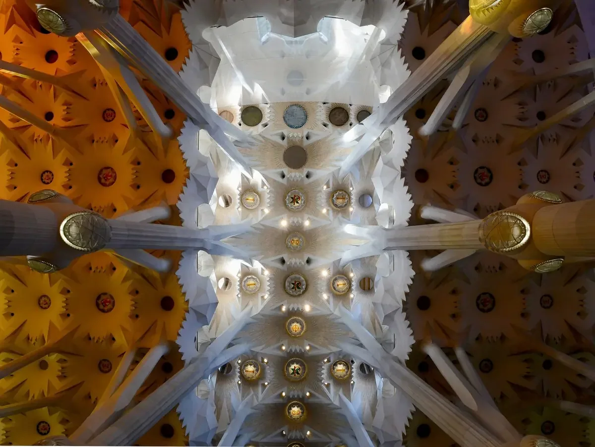
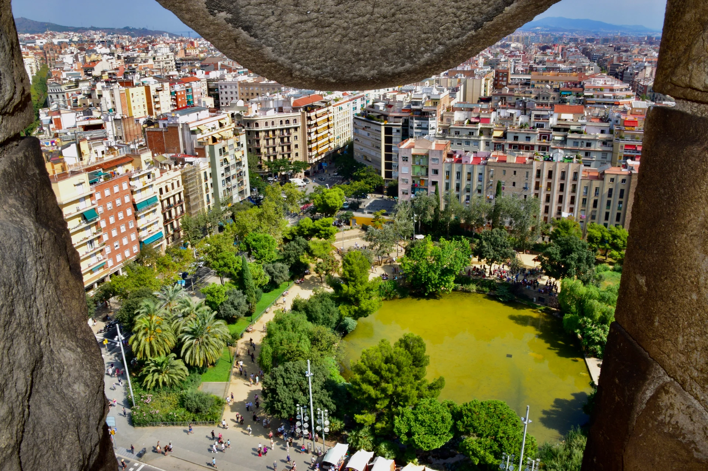
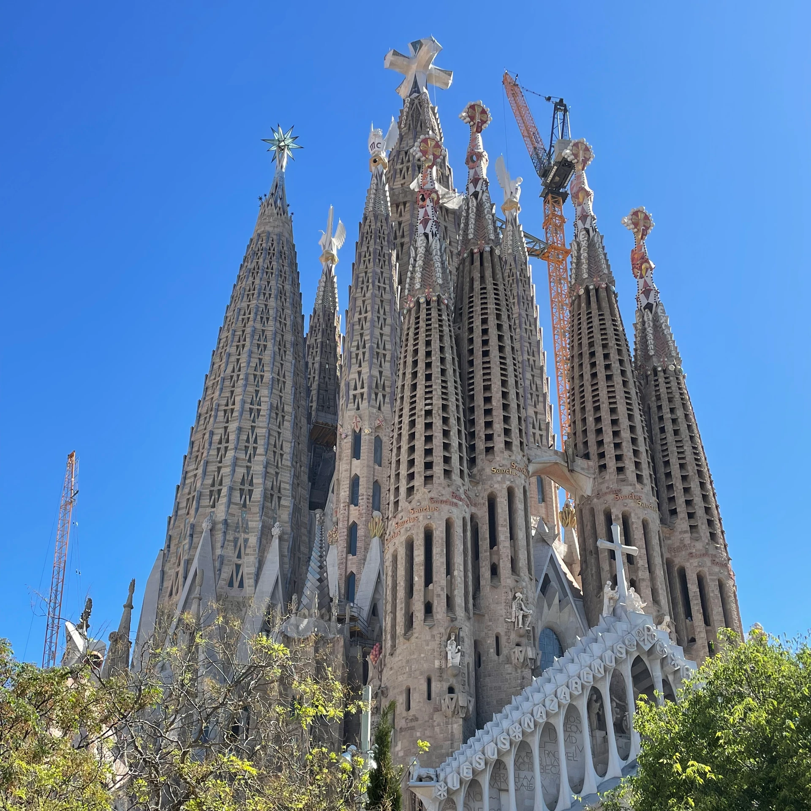
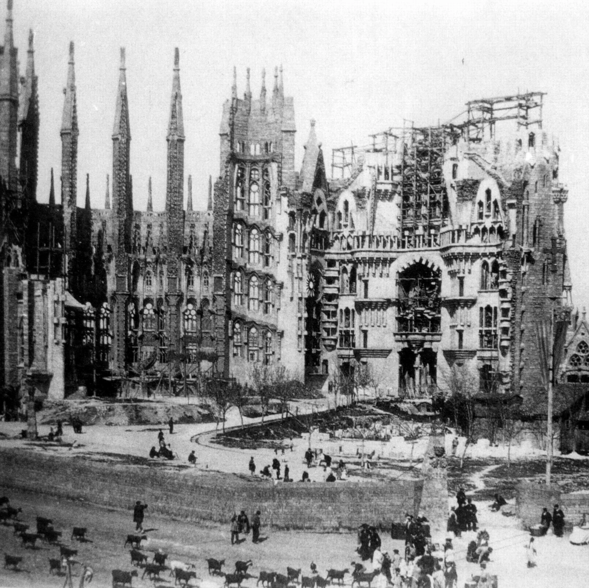
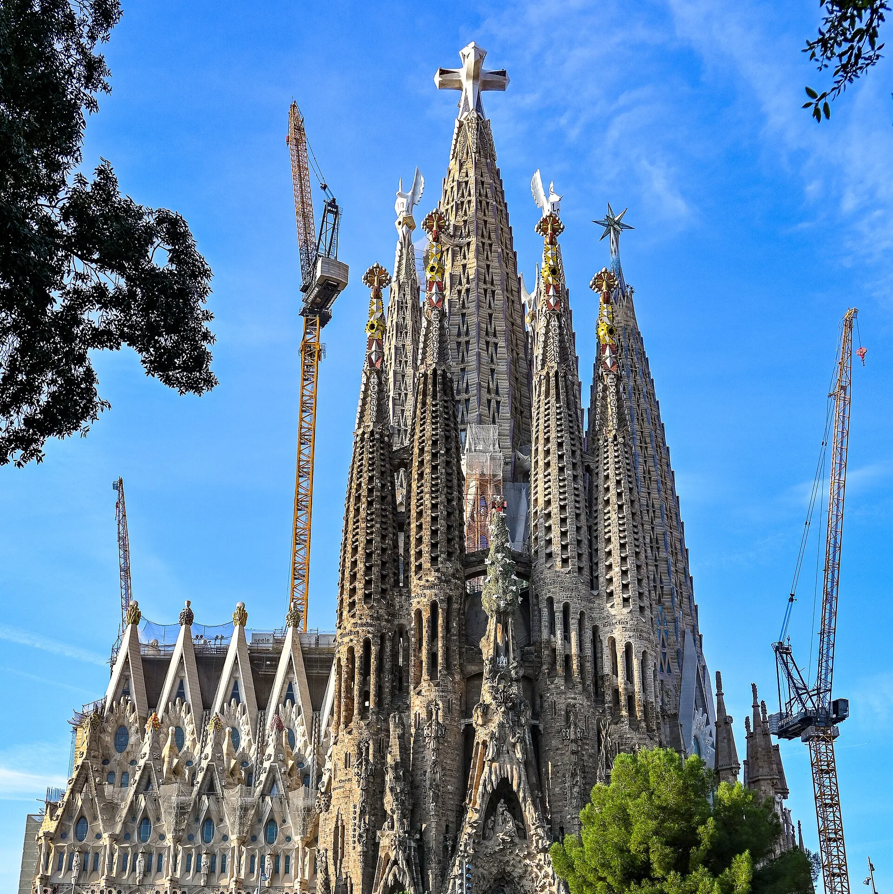
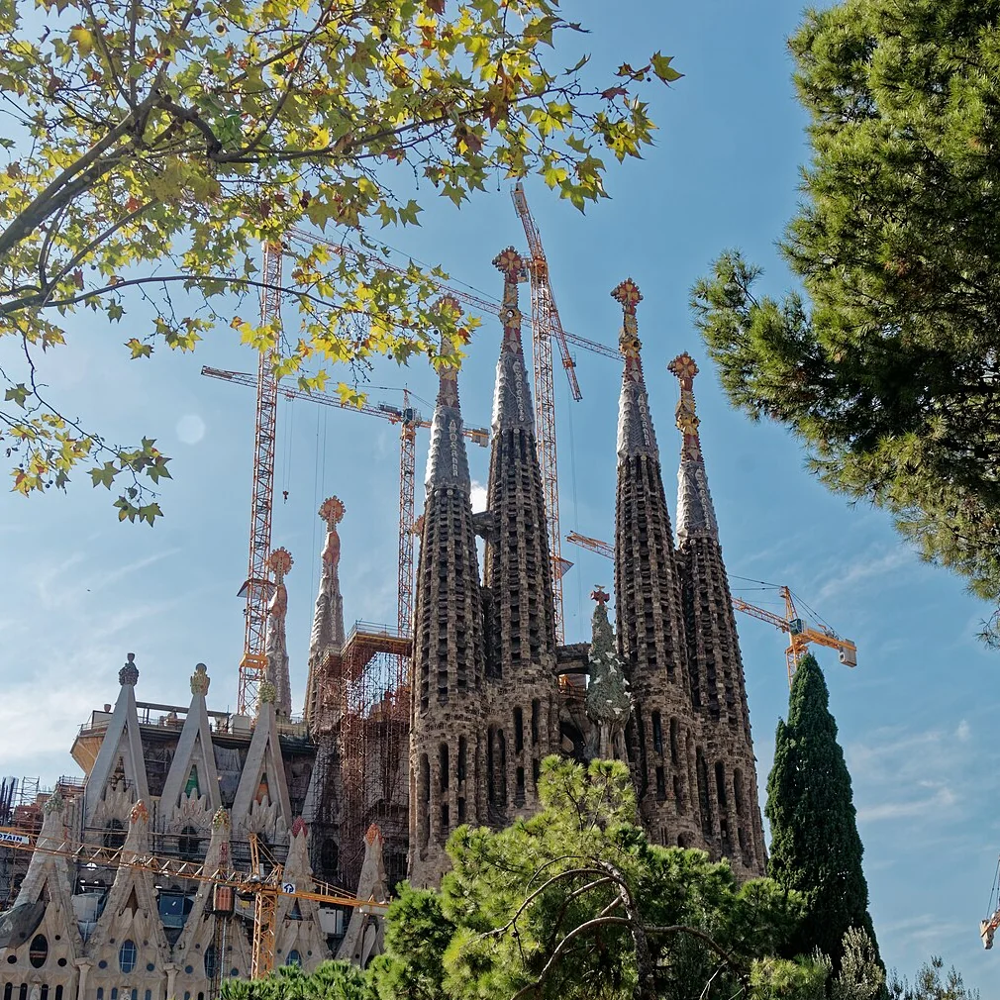
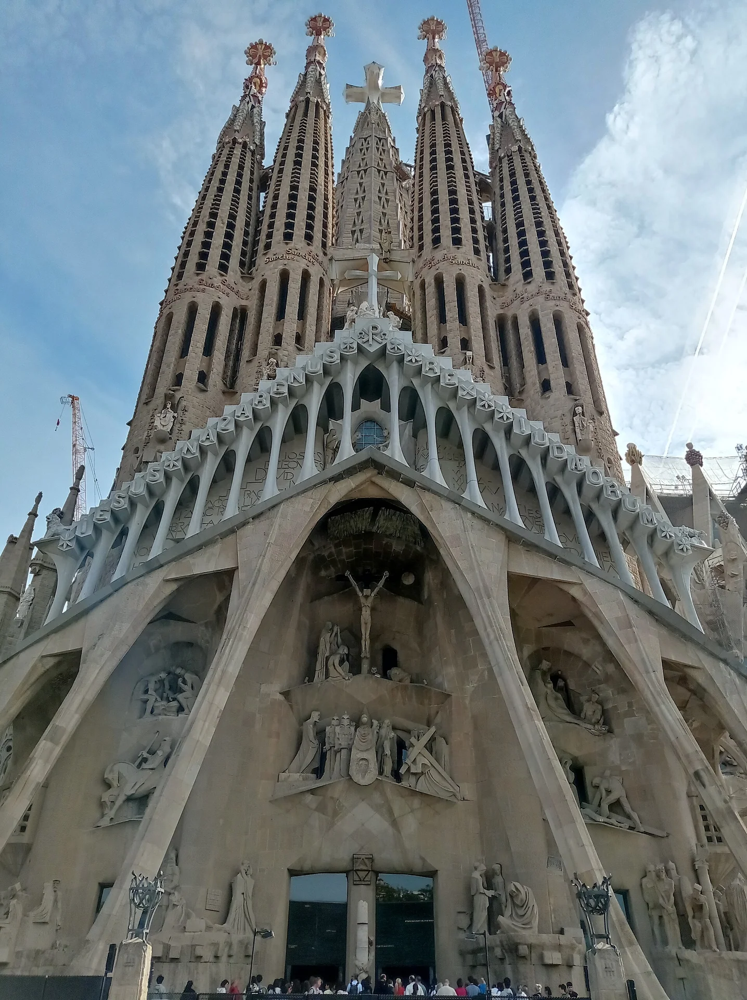
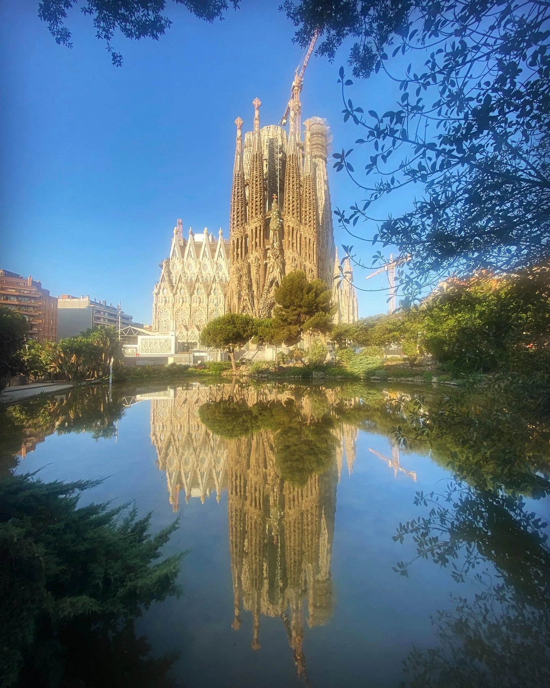

아직 펼치지 않은 카드돌로 지은 숲과 금빛 천장 · 2사그라다 파밀리아 성당한 건축가가 평생을 바치고도 완성을 보지 못한 성당이 있어요. 그 뒤 140년 넘게 누가 이 성당을 지어 왔을까요?위를 올려다보면 나무숲 같아! 돌로 만든 숲이래.
1882년 · 1915년 무렵 · 2026년스페인 바르셀로나 · 사그라다 파밀리아
사그라다 파밀리아 성당
1882년, 정원과 길로 둘러싸인 땅에 첫 돌을 놓은 성당이 있어요. 가우디가 떠난 뒤에도 여러 세대가 그 일을 이어받았어요. 1915년 무렵의 공사장 사진과 2026년의 모습을 손잡이로 겹쳐 보세요.
아주 오래오래 짓고 있는 성당이 있어. 옛날 공사장 사진과 오늘 사진을 겹쳐 볼까?
검수 전 시안이에요(기준서 1판). 이야기는 사그라다 파밀리아 공식 누리집과 공식 블로그·안내서를 따랐고, 옛 사진과 오늘 사진은 되도록 같은 쪽에서 찍은 것끼리 짝지었어요. 상상은 ‘눈 감고 상상해 보기’에만 썼어요.
시안 확인용카드 단계 미리 보기
1
책방 주인이 산 땅
이 성당을 처음 꿈꾼 사람은 건축가가 아니라 책방 주인이었어요. 바르셀로나에서 종교 책방을 하던 조제프 마리아 보카베야(Josep Maria Bocabella)는 1866년 성 요셉을 공경하는 신자 모임을 만들었어요.
모임은 잡지를 펴내, 성가족(예수·마리아·요셉)에게 바칠 성당을 짓자며 헌금을 청했어요. 1881년 12월 31일, 보카베야는 산마르티 데 프로벤살스(Sant Martí de Provençals)라는 옛 마을에 땅 12,800제곱미터를 살 수 있었어요.

1882년 3월 19일 성 요셉 축일, 정원과 길로 둘러싸인 그 땅에 첫 돌을 놓았어요. 첫 건축가 비야르(Francisco de Paula del Villar)는 입구 위로 85미터 높이의 뾰족한 종탑이 솟은, 옛 고딕 성당을 본뜬 성당을 그렸어요.
비야르는 지하 성당(땅 아래 예배당)의 기둥을 통돌로 세우고 싶어 했지만, 보카베야와 건축가 마르토렐(Joan Martorell)은 너무 비싸다고 보았어요. 뜻이 갈리자 비야르는 물러났어요.
1883년 11월 3일, 서른한 살의 안토니 가우디가 뒤를 이었어요. 그때 지하 성당 터는 이미 다져졌고 기둥은 반쯤 올라가 있었어요.
사진은 2014년에 탄생의 정면 탑에서 내려다본 모습이에요. 정원과 길이 있던 둘레가 이제 빽빽한 시가지가 되었어요.
처음 성당을 꿈꾼 사람은 책방 아저씨였대. 이 성당은 사람들이 낸 헌금으로 지어.
물어보기그때 이 땅 둘레에는 무엇이 있었을까?
2
빈터의 공사장
1914년부터 가우디는 다른 일을 모두 그만두고 이 성당만 지었어요. 이렇게 큰 성당이 다 지어지는 것을 살아서 보지 못하리라는 것을 그는 늘 알았어요. 그래서 자기가 끝낼 수 있는 부분이 뒤에 올 건축가들의 본보기가 되게 했어요.
그때 높이 올라가던 곳이 예수가 태어난 이야기를 새긴 ‘탄생의 정면’이에요. 1925년 11월 30일, 그 위에 첫 종탑인 성 바르나바 탑이 다 올라갔어요. 가우디가 완성을 본 단 하나의 탑이에요.
가운데 손잡이를 밀어 그때와 지금을 겹쳐 보세요. 위의 단추로 두 쌍을 바꿔 볼 수 있어요.


왼쪽 · 1915년 무렵의 공사장 · 사진: Templo Expiatorio de la Sagrada Familia(1915년 무렵) · CC BY-SA 3.0 · 위키미디어 공용 · 양옆을 조금 잘라 씀
오른쪽 · 2026년 4월, 같은 쪽(수난의 정면 쪽)에서 본 모습 · 사진: Wikipsico43(2026) · CC BY-SA 4.0 · 위키미디어 공용 · 위아래를 조금 잘라 씀
두 사진 모두 지금 수난의 정면이 선 쪽에서 찍었어요(서 있던 자리와 높이는 조금 달라요). 위키미디어 공용은 옛 사진을 탄생의 정면이 있는 북동쪽 날개의 안쪽을 찍은 사진으로 분류해요. 오늘 같은 쪽에서는 그 사이에 선 수난의 정면과 가운데 탑들이 보여요.


왼쪽 · 2009년, 가우디 광장에서 본 탄생의 정면 · 사진: Txllxt TxllxT(2009) · CC BY-SA 4.0 · 위키미디어 공용 · 일부 잘라 씀
오른쪽 · 2026년, 같은 광장에서 본 탄생의 정면 · 사진: ProtoplasmaKid(2026) · CC BY 4.0 · 위키미디어 공용 · 일부 잘라 씀
탄생의 정면 앞 가우디 광장에서 찍은 두 사진이에요(서 있던 자리와 거리는 조금 달라요). 2009년에는 탑 네 개 뒤로 기중기만 서 있었어요. 2026년에는 그 뒤로 십자가를 단 예수 그리스도의 탑이 솟았어요.
옛 사진에서 벽 꼭대기에 얽힌 것이 비계(공사할 때 세우는 발판)예요. 공식 안내서는 20세기 중반까지 나무 비계를 세워 지었다고 적었어요.
옛날 사진에는 성당 앞이 텅 빈 땅이야. 지금은 높은 탑이 가득해!
물어보기손잡이를 밀면 무엇이 새로 나타날까?
3
1926년과 1936년
1926년 6월 7일 월요일, 가우디는 기도하러 가던 길에 전차에 치였어요. 사흘 뒤 6월 10일, 그는 세상을 떠났어요.
6월 12일 토요일, 큰 무리가 장례 행렬에 함께하며 이 성당으로 향했어요. 이튿날 한 신문에 이런 글이 실렸어요.
“월요일에 그는 혼자 이곳을 떠났다. 토요일에 그는 온 도시와 함께 돌아왔다.”
류이스 카레라스, 「라 베우 데 카탈루냐」 1926년 6월 13일 · 사그라다 파밀리아 공식 누리집에 실린 글 · 이 안내서가 옮김
일은 가우디의 제자 도메네크 수그라녜스(Domènec Sugranyes)가 이어받았어요.
1936년 스페인 내전 때 성당이 망가졌어요. 설계도와 사진은 불타고, 석고 모형은 부서졌어요.
1936년, 작업실이 불타고 석고 모형이 부서졌어요. 가우디와 함께 일하던 사람이라면 무엇부터 할까요?
가우디 아저씨가 세상을 떠났어. 장례식 날, 아저씨는 이 성당으로 돌아왔대.
물어보기아저씨는 누구와 함께 돌아왔을까?
4
다시 이어 짓는 사람들
1939년부터 프란세스크 킨타나(Francesc de Paula Quintana)가 공사를 맡았어요. 작업실에서 건진 자료를 책에 실린 설계도와 사진으로 다시 맞추어 공사를 이어 갔어요. 그 뒤로도 건축가가 여러 번 바뀌며 일을 이어받았어요.
1954년 수난의 정면 터를 닦았고, 1955년에는 처음으로 모금 행사가 열렸어요. 성당 건축 위원회 재단의 에스테베 캄프스 대표는 2026년 6월 한 인터뷰에서, 열두 살 때 이미 학교에서 모금함을 들고 모금에 나섰다고 말했어요.

수난의 정면 종탑 넷은 1976년에 다 올라갔어요. 1986년에는 조각가 조제프 마리아 수비라크스(Josep Maria Subirachs)가 이 정면의 조각들을 맡았어요.
2010년 11월 7일, 교황 베네딕토 16세가 이 성당을 봉헌했어요.
사진은 2026년 5월의 수난의 정면이에요. 뼈대 같은 기둥 아래 십자가에 달린 예수와 수난 이야기 조각들이 있어요.
가우디 아저씨가 떠난 뒤에도 많은 사람이 이어서 지었대. 어린이들도 모금함을 들고 도왔대!
물어보기사진에서 십자가를 몇 개나 찾을 수 있어?
5
2026년, 하늘의 십자가
2026년 2월 20일, 가장 높은 ‘예수 그리스도의 탑’ 꼭대기에 십자가의 위쪽 팔이 올라갔어요. 탑의 높이는 172.5미터예요. 십자가는 높이 17미터, 너비 13.5미터로, 유리와 하얀 법랑 도자기로 덮었어요.
가우디가 세상을 떠난 지 100년이 되는 6월 10일, 교황 레오 14세가 기념 미사를 이끌고 이 탑을 축복했어요. 그 뒤 탑에 처음으로 불이 켜졌어요. 오래전 가우디가 남긴 말을 공식 누리집은 이렇게 전해요.

“사그라다 파밀리아는 하나님의 손에 있는 일이고, 사람들의 뜻이에요.”
안토니 가우디의 말 · 사그라다 파밀리아 공식 누리집(전시 「안토니 가우디: 인간과 영성」) · 이 안내서가 옮김
제일 높은 탑 꼭대기에 커다란 십자가가 올라갔대. 밤에는 불도 켜져!
물어보기연못에 비친 성당은 어떤 모습이야?
눈 감고 상상해 보기
1915년 무렵 어느 날, 빈터 한가운데 서 있어요. 돌을 다듬는 망치 소리가 울리고, 높은 비계 위에서 일꾼들이 서로를 불러요. 발치에서는 가축 떼가 풀을 뜯고, 고개를 들면 아직 탑이 없는 정면이 하늘을 향해 서 있어요.
눈을 감아 봐. 넓은 빈터야. 땅땅, 돌 다듬는 소리! 양들이 매애~ 하고 지나가. 고개를 들면 높은 벽이 보여.
나의 자리
내가 다 보지 못하더라도 시작하고 싶은 일이 있나요? 그 일을 누구와 함께 지어 가고 싶나요?
숲속처럼 생긴 집을 짓는다면 어떻게 지을래?
마음에 닿는 한 줄을 고르거나 직접 써 보세요. 한 줄을 남기면 이 자리의 도장이 찍혀요. 이 기기에만 저장돼요.
더 깊이
궁금한 칸만 펼쳐 읽어도 괜찮아요.
알고 보면
속죄 성당 사그라다 파밀리아는 ‘속죄 성당’으로 지어졌어요. 공식 안내서는 신자들의 헌금만으로 짓는 성당이라고 설명해요. 재단 대표는 2026년 인터뷰에서, 속죄 성당이라 보조금을 청할 수 없다고 재단 규약에 적혀 있다고 말했어요.
성 요셉 축일 첫 돌을 놓은 3월 19일은 성 요셉 축일이에요. 공식 블로그는 2026년 이날에도 성당에서 성 요셉 미사를 드린다고 알렸어요.
성당 사진첩 1915년에 나온 첫 사진첩은 다섯 나라 말로 펴냈고, 공사 사진과 완성된 성당의 평면도 스케치를 실었어요. 1927~1929년의 넷째 사진첩은 푸이그 보아다의 1929년 책과 함께 가우디의 마지막 뜻에 가장 가까운 자료로 꼽혀요.
이어받은 건축가들 비야르(1882) → 가우디(1883) → 수그라녜스(1926) → 킨타나(1939) → 푸이그 이 보아다와 보네트 이 가리(1966) → 카르도네르(1983) → 조르디 보네트(1985) → 조르디 파울리(2012).
잊지 말아야 할 이름 공식 안내서는 처음 이 일을 일으킨 보카베야와 조제프 마냐네트 신부를 잊지 말자고 적었어요.
기록마다 다른 점
첫 돌을 놓은 사람 공식 누리집 연표는 우르키나오나 주교가 첫 돌을 놓았다고 적고, 공식 블로그의 다른 글은 누가 놓았는지 대신 바르셀로나와 비크의 주교들이 함께했다고 적었어요.
1936년에 잃은 것 공식 누리집 연표는 설계도와 사진이 불타고 석고 모형이 부서졌다고 적고, 공식 블로그는 작업실이 원래 설계도·모형과 함께 불탔다고 적었어요.
직접 가 보기
확인한 날 · 2026년 11월 18일 · 바뀌기 쉬운 정보라 정기적으로 다시 확인해요
탄생의 정면 앞 가우디 광장에서는 연못에 비친 성당을 볼 수 있어요. 수난의 정면은 그 반대쪽에 있어요.
성당 안에 들어가려면 표가 있어야 해요. 표와 관람 시간은 공식 누리집에서 확인해 주세요.
두 시대를 끝까지 금박
두 쌍의 사진을 모두 손잡이로 양쪽 끝까지 밀어 보면 카드에 금박이 입혀져요.
1915년 무렵과 2009년 사진을 2026년과 끝까지 겹쳐 보기
이어 짓는 사람의 자리 채색
둘 가운데 하나만 해도 카드가 채색돼요.
1936년 가우디와 함께 일하던 사람이 되어 무엇부터 할지 고르기
아이와 함께 ‘영화처럼 보기’를 끝까지 보기
근거 보기 (12)
- 사그라다 파밀리아 공식 누리집: 연표 — 1882년 비야르·3월 19일 우르키나오나 주교, 1883년 가우디, 1914년 이 성당에만, 1925년 성 바르나바 탑(가우디가 완성을 본 단 하나), 1926년 제자 수그라녜스, 1936년 설계도·사진 불타고 석고 모형 부서짐, 1939년 킨타나·작업실에서 건진 자료를 출판된 설계도·사진으로 다시 맞춤, 1954년 수난의 정면 터, 1955년 첫 모금, 1966·1983·1985·2012년 건축가, 1976년 수난의 정면 종탑, 1986년 수비라크스, 2010년 11월 7일 봉헌, 2026년 2월 20일 십자가 위쪽 팔·6월 10일 100주년 미사와 축복, 첫 불빛
- 공식 블로그 「144년의 함께한 역사」(2026.5.6) — 정원과 길로 둘러싸인 산마르티 데 프로벤살스의 땅, 1926년 6월 7일 전차 사고와 사흘 뒤, 바르셀로나 곳곳을 지나 성당에 이른 장례 행렬, 1936년 작업실이 설계도·모형과 함께 불탐, 남은 조각을 지킨 사람들, 제자들이 조금씩 다시 시작, 1954년 수난의 정면, 1955년 수난의 정면 모금 사진
- 공식 누리집: 유산 — 보카베야(종교 책방), 1866년 성 요셉 신자 모임과 잡지, 성가족에게 바칠 성당을 위한 헌금, 1881년 땅, 보카베야와 뜻이 달라 물러난 비야르와 가우디
- 공식 블로그 「성 요셉, 사그라다 파밀리아의 중요한 날」(2026.3.10) — 1881년 12월 31일 옛 마을 산마르티 데 프로벤살스의 12,800제곱미터, 1882년 첫 돌(바르셀로나·비크 주교들이 함께함), 2026년 성 요셉 미사
- 공식 블로그 「가우디가 맡지 않았다면」 — 비야르의 신고딕 성당과 85미터 종탑, 지하 성당 통돌 기둥을 두고 보카베야·마르토렐과 갈린 뜻, 1883년 11월 3일 서른한 살 가우디, 터와 반쯤 오른 기둥
- 공식 안내서 2 「성당 공사의 짧은 역사」(2026) — 가우디는 다 지어진 성당을 보지 못하리라는 것을 늘 알았고 자기가 끝낼 부분을 뒤에 올 건축가들의 본보기로 삼음, 20세기 중반까지 나무 비계, 신자들의 헌금만으로 짓는 속죄 성당, 보카베야와 마냐네트 신부를 잊지 말자
- 카사 바트요 누리집: 사그라다 파밀리아 — 1914년부터 이 성당에만, 다 지어진 것을 보지 못하리라 알고 먼저 탄생의 정면을 지음, 1925년 11월 30일 탄생의 정면 첫 종탑(가우디가 본 단 하나)
- 공식 누리집: 「안토니 가우디: 인간과 영성」 — 기도처로 가던 길의 전차 사고, 6월 10일, 6월 12일 장례 행렬, 카레라스의 글(1926.6.13), 가우디의 말 “하나님의 손에 있는 일이고 사람들의 뜻”
- 공식 블로그 「성당 사진첩」(2025.5.2) — 1915년 첫 사진첩(다섯 나라 말, 공사 사진과 완성된 성당의 평면도 스케치), 넷째 사진첩(1927~1929)과 푸이그 보아다의 1929년 책이 가우디의 마지막 뜻에 가장 가까움, 공사를 잇는 건축가들이 가장 자주 살펴보는 글 자료
- 공식 누리집: 「바르셀로나 하늘에 닿은 십자가」 — 2026년 2월 20일 위쪽 팔, 172.5미터, 십자가 17×13.5미터, 유리와 하얀 법랑 도자기
- 아라(2026.6.4) 에스테베 캄프스 인터뷰 — 성당 건축 위원회 재단 대표, 열두 살 때 학교에서 모금함을 들고 모금, 속죄 성당이라 보조금을 청할 수 없다는 규약
- 위키미디어 공용: 1915년 무렵 공사장(북동쪽 날개 안쪽으로 분류) · 2026년 수난의 정면 쪽 · 2009년·2026년 가우디 광장 · 2014년 탑에서 본 광장 · 2021년 연못에 비친 성당의 설명
그림·사진·소리 출처
- 사진: Ank Kumar(2014) · CC BY-SA 4.0 · 위키미디어 공용
- 사진: Templo Expiatorio de la Sagrada Familia(1915년 무렵) · CC BY-SA 3.0 · 위키미디어 공용 · 양옆을 조금 잘라 씀
- 사진: Wikipsico43(2026) · CC BY-SA 4.0 · 위키미디어 공용 · 위아래를 조금 잘라 씀
- 사진: Txllxt TxllxT(2009) · CC BY-SA 4.0 · 위키미디어 공용 · 일부 잘라 씀
- 사진: ProtoplasmaKid(2026) · CC BY 4.0 · 위키미디어 공용 · 일부 잘라 씀
- 사진: Canaan(2026) · CC BY-SA 4.0 · 위키미디어 공용
- 사진: Danes Mava(2021) · CC BY-SA 4.0 · 위키미디어 공용
- 사진: Alvesgaspar · CC BY-SA 4.0 · 위키미디어 공용
‘처음 만나는 기독교 문화’의 깊은 카드예요. 실제 인물의 사진은 쓰지 않았어요. 카드 단계와 남긴 글은 이 기기에만 저장돼요.